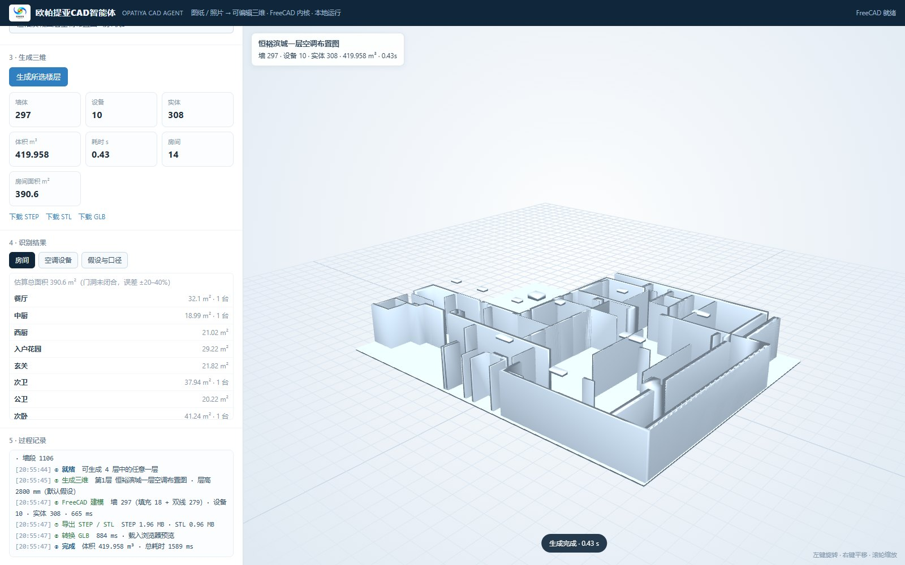
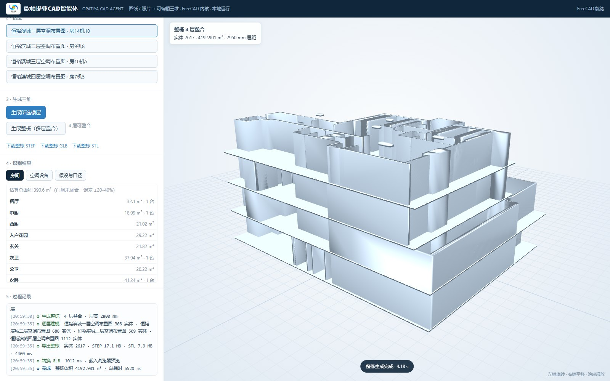
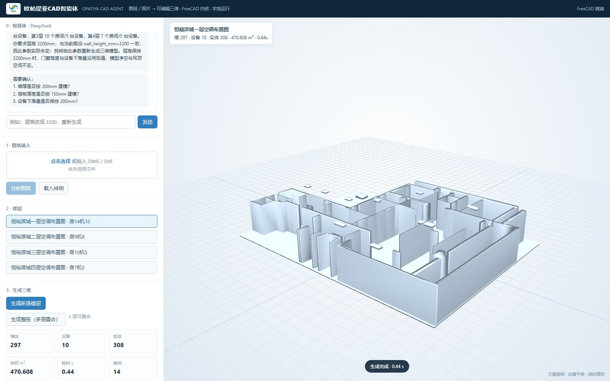

欧帕提亚CAD智能体 Web 本地版
图纸 / 图片 → 可编辑三维：DWG/DXF 解析 · 房间与设备识别 · FreeCAD 参数化建模 · STEP/STL/GLB · 整栋叠合 · 自然语言改参数。
本软件把户型图（DWG/DXF）读成可计算的三维模型：先解出楼层、墙体、房间、门窗与空调设备， 再在 FreeCAD 里按参数生成楼板、墙体与设备盒体，输出 STEP / STL / GLB， 并支持整栋多层叠合与浏览器三维预览。图纸解析全在本地完成， 不上传云端；大模型只负责理解自然语言并给出受控参数，几何仍由 FreeCAD 确定性生成。

主界面（恒裕滨城一层，单层生成完成）：左侧依次为智能体对话、图纸上传、楼层选择、生成与指标、房间/设备/假设清单、 过程记录；右侧为 FreeCAD 生成的三维模型（楼板 + 实体墙 + 空调设备），可直接旋转缩放。

整栋叠合：四层按“层高 2,800 mm + 楼板 150 mm = 2,950 mm 层距”叠放，共 2,617 个实体、4,192.901 m³， 导出 STEP 约 17 MB / STL 约 8 MB，FreeCAD 建模约 4 秒。

自然语言改参数：输入“层高改成 3200，重新生成”，智能体回填受控参数并触发重建， 体积由 419.958 m³ 变为 470.608 m³；对话下方为参数 chip 与追问。
主要功能
样例：6.97 MB DWG → 50.3 MB DXF · 4 层 / 14·9·10·7 房间 / 10·8·5·5 台设备 · 单层 308 实体 / 419.958 m³ / 0.43 s · 整栋 2,617 实体 / 4,192.901 m³ / 4.0–4.5 s · STEP 2.05 MB（单层）/ 17.1 MB（整栋）
技术栈与边界
前端 Vue 风格原生 HTML + three.js r128（本地 vendor，无外网依赖），后端 FastAPI + uvicorn，几何内核 FreeCAD 1.0.0（便携 conda 环境，无 GUI 调用）， 解析链 LibreDWG 0.11 → ezdxf 1.4 → shapely / OpenCV，转换 trimesh。 当前版本以 DWG/DXF 为主链路；PNG 图纸矢量化、门窗洞口开洞、墙厚/门窗驱动几何仍在开发中， 房间面积因门洞未闭合按“估算 ±20–40%”标注。示例图纸为恒裕滨城四层空调布置图（6.97 MB）， 设备型号与尺寸均来自图纸标注，未标注的层高、墙厚按工程假设并在界面与日志中注明。